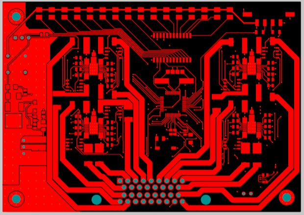
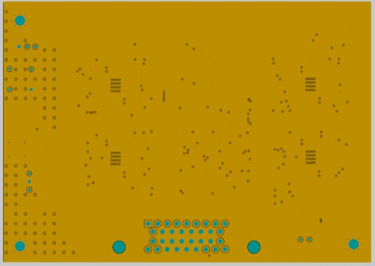
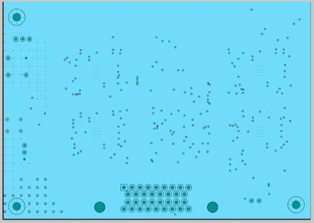
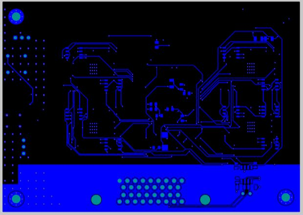
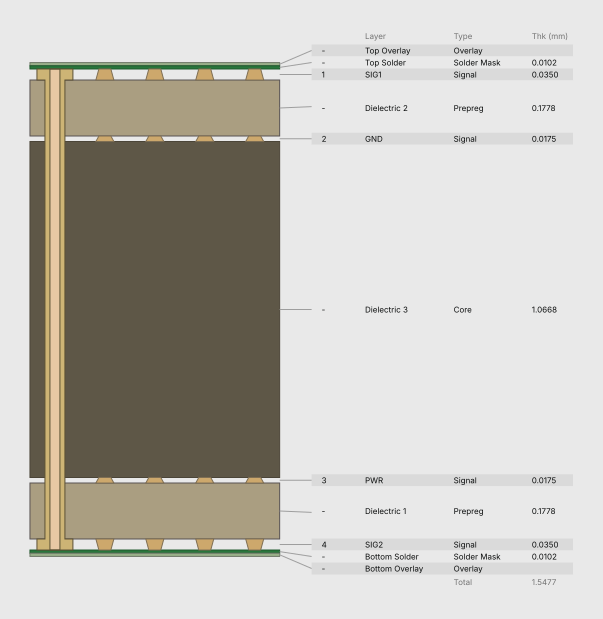

T11 · EESC-USP Tupã
Power Distribution Module
Electronic power distribution for the Formula SAE vehicle.

Board details
- PCB
- 4 copper layers · 1.5477 mm stackup
- Controller
- STM32G4A1CET6
- Switching
- VNQ9025AJTR high-side switches
- Build status
- Manufactured, tested and installed
PCB LAYOUT
Four-layer PCB layout
The PDM is the only four-layer board in this collection. These views show each copper layer separately, followed by the stackup exported from Altium.




Layer stackup and thicknessView drawing

1.5477 mm total thickness in the Altium stackup. Copper: 35 / 17.5 / 17.5 / 35 μm.
PDM schematics
7 sheetsSystem overviewView sheet

Power supplyView sheet

MicrocontrollerView sheet

High-side switchesView sheet

CAN and LEDsView sheet

MeasurementView sheet

ConnectorsView sheet

Altium project
These source links may require workspace access. The schematic drawings above are saved with this portfolio.